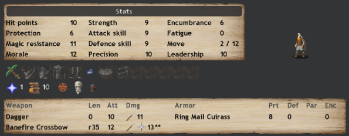
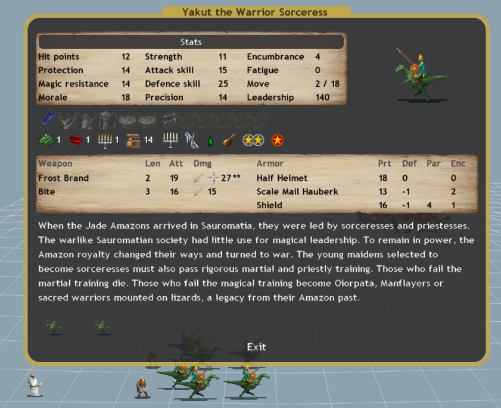
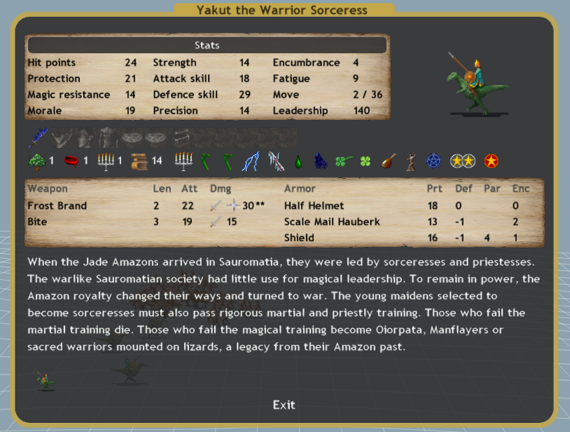
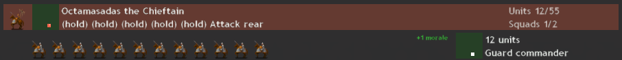

Annex/Terminology Repository
PotNS
Portmanteau for casting Light of the Northern Star and Power of the Spheres together.
Income
income = {floor((pop+10*defence)/100) * [1+.05*order] * [1+.05*temp] * [1+.03*Growth] * [1+.02*Prod ]}/(1+(unrest*0.02)) - max(0, sum(admin) - .5)
Effective Fort Cost
The cost necessary to make a useful fort.
Most nations require a lab to make their forts useful.
Some nations require only a temple, such as mictlan.
Other nations require both a temple and a lab in their forts,
making their Effective Fort Cost very high.
Sauromatia needs neither a lab nor a temple to make soothsayers.
This means that their effective fort cost is rather low.
Excellent reason to spam forts on every province you own.
Fortune Teller
Fortune Teller is a skill all Enari and Soothsayers possess.
Whenever a bad event happens in a particular province, every Enari and every Soothsayer in that province has a 5% chance to stop it.
The chance that an event is stopped is exactly % where n = # of fortune tellers.
Terminology for Scaling Spells
When an Y pathed spell is marked as having M+ effects, this is to mean
that the spell will have an extra effect for every path the casting mage has above Y.
Similarly M++ gives an extra two effects.
For example, Horde of Skeletons is a D2 spell which summons 6+ skeletons.
So an Enari that's currently at D4 will summon 8 skeletons with every cast of Horde of Skeletons.
Mercenaries
Mercs are p. good. They tend to pay for themselves quickly enough.
Screening
Say someone is digging into your territory with some big bad.
They only have so many gems on them.
To whittle down on their supply you send one of your immortal vampires to fight them with some blood slaves.
This will trigger all their gem usage lowering their magical strength for upcoming battles.
This is screening.
Evo Catching
Evo Catching is when you place a unit far ahead, preferably one that is large with a good deal of hp,
in order to lure evocations away from your more delicate troops.
Vine Ogres make for some of the most cost effective evo catchers in the game.
1Comm
A communion which defaults to 1fat spells after scripting
Communions
Sauromatia is a nation of communion.
Your bread and butter as Sauromatia will be a Skelespamming 1Comm
Given a soothsayer castin’ Power of the Spheres, the slaves will have more spell paths than the casting
masters, thus fatigue is cut in half. This will have the slaves incurring a 1 fatigue per spell cast,
even in drain 2, which is enough to last a battle.
Note: Communion Slaves and Master can be at any distance of each other, anywhere on the battlefield.
Similarly for Sabbath Slaves and Masters. Interestingly, Blood Slaves follow a weaker but similar rule.
A blood mage may use friendly slaves from within 8 squares inclusive on the battlefield, even those he does not hold.
Natural order of Enari artillery should be:
- 2 Soothsayer / 2 Enari Turbo Comm
- Fatigue per Turn: Turbo Stable.
- 4 Enari / 5 Enari Comm
- Fatigue per Turn: 12
- 2 Enari / 5 Enari (+ 2 Soothsayer) PotNS Comm
- Fatigue per Turn: 12
- 4 Enari / 10 Enari (+ 2 Soothsayer) PotNS Comm
- Fatigue per Turn: 10
- 4 Enari / 12 Enari (+ 2 Soothsayer, + 1 Witch King) PotNS Relief Comm
- Fatigue per Turn: 11.5 (Have the Witch King cast reinvigorate)
Turbo Communions
Once communion slaves hit the 200 fatigue they start taking damage at a rate of 1hp for every 50 points of fatigue, rounded up.
Normally in a stable communion you want to keep this off for as long as possible, by finding ways of lowering the fatigue per spell and increasing the slaves' reinvigoration.
However sometimes you can just say fuck it, and take the blows. These are turbo communions.
The point of a turbo communion is for your slaves to regenerate HP faster than they get damaged from spellcasting fatigue.
Generally this is not recommended as it gives a hard (and low) upper cap on how many masters you can field.
Consider this setup:
2 Enari as masters, and 2 Soothsayers as slaves.
Every Horde of Skeletons cast will put back each slave by 28 points of fatigue.
In only 4 turns the slaves will be at 200 fatigue, not ideal.
However if you enlarge the slaves and cast personal regen on the master, the slaves will be healing 2hp per turn, as many hit points as there are masters.
This means the communion is “turbo stable” and will last the duration of the fight.
Care must be taken as the Enari casting enlarge must be in the same square as the two soothsayers.
A turbocomm with 40 archers is able to kill Bogus and co.


Just look at this handsome man.
And not a single fuck was given that day.
TurboRaid
A raiding party that consists of a turbo communion and a small squad of Cataphracts or Archers.
Super Huge Communions
A super big communion is defined as a communion that's huge, like xbox huge.
We will consider 4+/16+ enari communions, generating 120+ skeletals per turn.
Let's go over the main ingredients for this recipe.
- 1 Soothsayer casting PotS, then Fire Closest with a bow of your choosing. (Black or Bane Venom recommended)
- 1 Earth Indie casting Earthpower(+4 reinvig), then Fire Closest with a bow.
- A massive number of Enari.
- A nature random Witch King casting Relief(+2.5 reinvig), hold, hold, hold, Reinvigorate, then Cast Spells.
The number of turns a large communion can stand is expected to be (100/R)+(100/(R-5))+5
With the notable expection that if R ≤ 0 then the communion is fatigue-stable.
An example of a Super Big Communion would be a 4/16 core communion with 1 Soothsayer, 1 Witch King, and one Witch.
In this case R = 16 - 6.5 + 1 = 10.5. So the communion will last an expected (100/10.5)+(100/(10.5-5))+5 = 32 turns.
That is, this communion will cast 137 longdead every turn for 32 turns.
The research required for this is Const4, Ench6, Conj3 and Thaum1. So early midgame.
Battlefield Strategy
Main Mage Battery
PotNS Group
Placed somewhere in the back to cast PotNS and various other spells.
The Banefire Crossbow is to make sure he doesnt eat up skeleton casting fatigue
Warrior Sorceress Thug Group
Warrior sorceresses are rather good light thugs when placed into armies.
With a W and E minor they can handle themselves quite well while flanked by friendly skeletons.
To do this, place a soothsayer in the same square as they are, casting Body Ethereal, Cheat Fate and Luck.
The WS in turn can cast Barkskin and Bless.
However without the soothsayer and skeleton support these light thugs can quickly get surrounded and killed.
They can raid with the help of a couple of Enari.
- A soothsayer covering a sorceress in his “pixie dust”.
Suited with a W6E6 bless, such a thug can easily accumulate experience, further increasing her defence.
Thug Block
Witness, for I have made ND Warrior Sorceresses useful.
For this you will need one N2 Warrior Sorceress with a Thistle Mace, one NW Warrior Sorceress with a Water Bracelet,
and anywhere between 1 and 4 Warrior Sorceresses to buff into thugs.
Begin by kitting out your Thug Block by giving the appropriate boosters and Frost Brands to any Warrior Sorceresses you plan on thugging.
Note that if a thug dies they are cheaply replaced, costing 185gold and 5 wGems for a frost brand.
They will be placed in the following formation to allow proper buffing.
The thugs will be in the middle of the formation, flanked by both buffing Warrior Sorceresse and a BSgroup.
Before
After
This was done with an N9W4 bless, but without a bless these blocks are still both cheap and strong.
Commander Leading
One of the largest problems with battle management is that cavalry tends to rush infront of the summoned skeletons, leading to an expensive frontline.
The solution to this requires many commanders, approximately one for every 15 units of charge cavalry.

The idea is to have a small group of cavalry on guard commander, with the commander himself on holdx5 attack rear.
This will allow the cavalry to either flank besides friendly skeleton forces, or to merge with the skeletons, giving you a stronger frontline.